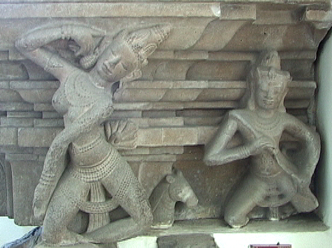
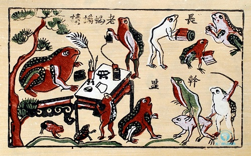

El arte y la arquitectura champa en Vietnam se formaron por la interacción de las costumbres locales con influencias indias, chinas e indonesias.
El arte y la arquitectura del norte de Vietnam estuvieron muy influenciados por más de un siglo de dominación china.
- El arte y la arquitectura vietnamitas tienen una larga y rica historia y han sido moldeados por la interacción de las costumbres locales con culturas extranjeras. El reino índico de Champa produjo arte hinduo-budista fuertemente indianizado, con influencias adicionales de Camboya, China y Java.
- Champa fue una civilización índica que floreció a lo largo de las costas del centro y sur de Vietnam entre 500 y 1500 d.C., tendida en importantes rutas comerciales que unían India, China y las islas indonesias.
- El legado artístico de Champa consiste en esculturas de piedra arenisca, tanto independientes como en relieve, y templos de ladrillo. El arte y la arquitectura cham sintetizaron temas del hinduismo, el budismo y diferentes cultos indígenas.
- El arte y la arquitectura de Champa alcanzaron su apogeo entre los siglos VII y X, tras lo cual cayó en un estado de declive gradual. Desgastado por el conflicto externo, el reino cayó en 1471 d.C.

.jpeg)
.jpeg)
.jpeg)

.jpeg)